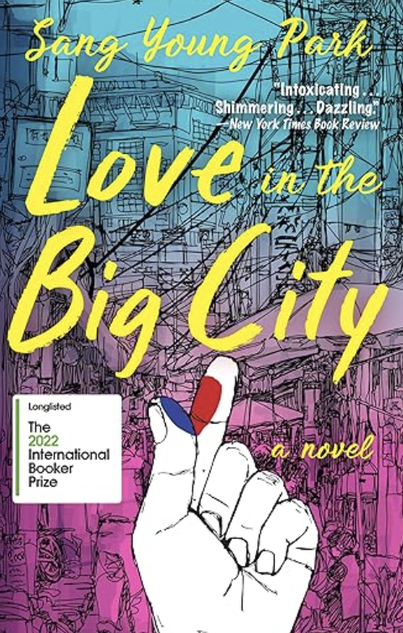

Love in the Big City
Genre: Literary Fiction, LGBTQ+, Contemporary Korean Literature
Author: Sang Young Park
Description:
A sharp, funny, and poignant novel about a young gay man navigating love, loneliness, and identity in the vibrant yet isolating city of Seoul.
Overview:
Love in the Big City follows Young, a quick-witted yet vulnerable Korean student exploring life and relationships in Seoul. From late-night soju-fueled conversations with his best friend Jaehee to fleeting Tinder matches and complicated romances, Young’s journey captures the highs and lows of queer millennial life. Over time, he grapples with profound questions of connection, family, and selfhood, especially as he cares for his ailing mother and searches for enduring love.